The cis/trans information for ligands of the double bond can be calculated by scpecifying a ligand (a1) of the double bond connecting to one end (a2) of the double bond and giving another ligand (a4) of the double bond connecting to the other end (a3) of the double bond.
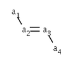
The possible values:
Molecule |
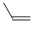 |
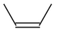 |
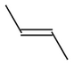 |
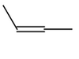 |
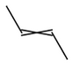 |
cis/trans value |
0 |
CIS |
TRANS |
CIS|TRANS |
CIS|TRANS |
An additional flag is used in conjunction with CIS or TRANS information in case of query molecules:
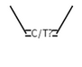 |
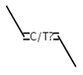 |
CIS or unspecified double bond |
TRANS or unspecified double bond |
Depending on the molecule's dimension the cis/trans information corresponding to the ligands of the double bond is stored in the bond or calculated from the coordinates.
It is optional to check atom equivalences using graph invariants for the ligands of the double bond during stereo calculation. If graph invariants are equal on one endpoint of the double bond then the two ligands connecting to this node are equivalent and so the double bond does not exhibit cis/trans isomerism.
Double bond stereo information of the atoms 3-1=2-5 |
|
if graph invariants not checked on the ligands the result is CIS |
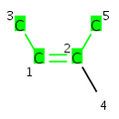 |
if graph invariants checked on the ligands the result is 0 |
To change cis/trans information of a double bond in the GUI, move the double bond ligands to the expected position.
To set cis/trans isomers, set the double bond type to Double Cis or Trans or set one ligand of the double bond to Single Up or Down.
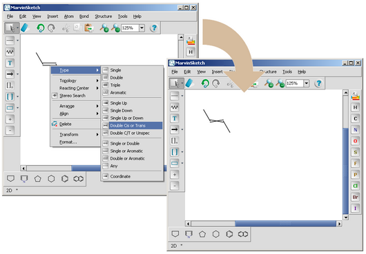
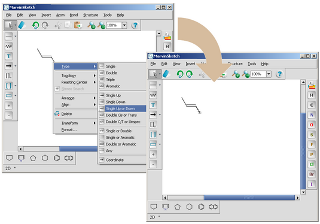
If the atomic coordinates are all zero then the molecule's dimension is zero. The double bond stereo information is stored in the bond flag referring to the first ligand (which is not the other end of the double bond) of each endpoint for the double bond (default reference frame).
The cis/trans information can be set directly using the
setFlags(int) function of the MolBond class.
In this case the set value refers to the default reference frame
arrangement a1-a2=a3-a4 where a2 and a3 is the double bond first and
second node and a1 and a4 is the first ligand of a2 and a3
respectively.
Code example for getting the default reference frame:
|
MolBond b = molecule.getBond(2) // default reference frame // for which the bond stereo will be set MolAtom a1 = b.getCTAtom1(); MolAtom a2 = b.getAtom1(); MolAtom a3 = b.getAtom2(); MolAtom a4 = b.getCTAtom4(); |
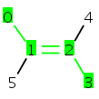 molecule with atom indexes |
Code example to set flags using the default reference frame:
MolBond b = molecule.getBond(2); // set CIS value to the reference frame b.setFlags(StereoConstants.CIS, StereoConstants.CTUMASK);
Another possibility to set cis/trans information is via the
setStereo2Flags(MolAtom a1, MolAtom
a4, int s) function of the MolBond class,
where the reference frame is
defined by the a1 and a4 atoms.
Code example using given reference frame:
MolBond b = molecule.getBond(2); // reference frame MolAtom a1 = molecule.getAtom(0); MolAtom a4 = molecule.getAtom(4); // set CIS value to the reference frame b.setStereo2Flags(a1, a4, StereoConstants.TRANS); |
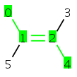 Result |
The cis/trans information can be got directly by the
getFlags() function of the MolBond class.
In this case the value returned refers to the default reference frame.
Code example:
MolBond b = molecule.getBond(2);
int s = b.getFlags() & StereoConstants.CTUMASK;
|
s = TRANS |
With a given reference frame there are four options to get the stereo information:
These all functions of the MoleculeGraph class.
The difference between them is how the reference frame is given
(by the node or by the node index) and the last method can check
atom equivalences too.
Code example:
|
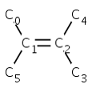 |
|
s = CIS |
Code example with atom equivalence check:
|
|
|
s = 0 |
If the atomic coordinates are specified, then the molecule has nonzero spatial dimension. In this case the double bond stereo information is calculated from the double bond and the reference frame atom coordinates. There are two exceptions when coordinates are not used and CIS|TRANS value is returned:
|
1. CIS|TRANS flag is set for the double bond which is depicted as crossed double bond. |
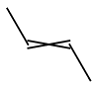 |
|
2. One ligand of the double bond has wiggly (UP|DOWN) bond type. |
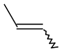 |
The only way to change the double stereo information from CIS to TRANS in
2 or 3D is to change the atomic coordinates of the corresponding ligands.
This can be achieved through
setXYZ(double x, double y, double z)
or setXY(double x, double y) functions of
MolAtom class.
Be aware that modifying the coordinates directly may cause overlapping
atoms and bonds.
It is more convenient to convert the molecule to 0D,
change stereo information in the 0D molecule and clean it to 2D or 3D.
Code example changing double bond type through 0 dimension:
molecule.setDim(0); // reference frame MolAtom a1 = molecule.getAtom(0); MolAtom a4 = molecule.getAtom(4); // set CIS value to the reference frame MolBond b = molecule.getBond(1); b.setStereo2Flags(a1, a4, StereoConstants.CIS); // clean to 2D molecule.clean(2, null);
To change the actual value to CIS|TRANS, there are two possibilities: either set CIS|TRANS flag for the double bond or set one bond between the double bond and a ligand to wiggly.
Code example: set the double bond to CIS|TRANS via changing the double bond flag:
int CISTRANS = StereoConstants.CIS | StereoConstants.TRANS;
// get the double bond
MolBond b = molecule.getBond(2);
// change flag
b.setFlags(CISTRANS, StereoConstants.CTUMASK);
|
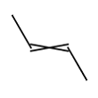 |
Code example: set double bond to CIS|TRANS using wiggly bond:
// get the double bond
MolBond b = molecule.getBond(2);
// get a single bond connected to one endpoint
// of the double bond
MolAtom a1 = b.getAtom1();
MolBond s = (a1.getBond(0) == b) ? a1.getBond(1) : a1.getBond(0);
// change single bond to WAVY
s.setFlags(MolBond.WAVY, STEREO1_MASK);
|
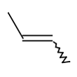 |
There are two low level functions in MolBond
class to calculate double
bond stereo information from the coordinates in 2D or 3D.
None of them checks if the bond in question is double bond or not.
calcStereo2() calculate the stereo information
for the default reference frame. calcStereo2(MolAtom atom1, MolAtom atom4)
calculates the stereo information for the given reference frame.
Note: it is not checked if atom1 and
atom4 are bound to the bond. As in case of the 0D molecules there are four methods to get the stereo information with reference frame given:
1.getStereo2(MolAtom a1, int i2, int i3, MolAtom a4)
2.getStereo2(int i1, int i2, int i3, int i4)
3.getStereo2(MolBond b, MolAtom a1, MolAtom a4)
4.getStereo2(MolBond b, MolAtom a1, MolAtom a4, boolean grcheck)
All of them are functions of the MoleculeGraph class.
The difference between them is how the reference frame is specified
(by the node or by the node index) and the last method can check
atom equivalences too.
It is important to note that CIS or TRANS result can be obtained if and only if there is no contradictory information in the coordinates. This means that two ligands at one end of the double bond on the same side are not allowed. Moreover, if a ligand is collinear with the double bond CIS|TRANS value is returned:
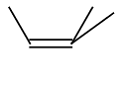 |
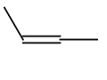 |
stereo 0 |
stereo CIS | TRANS |
Code example without atom equivalence check:
|
|
|
s = CIS |
Code example with atom equivalence check:
|
|
|
s = 0 |
Each substituent on a double bond is assigned a priority based on the Cahn-Ingold-Prelog priority rules. Ligands with highest priorities define the reference frame. If the two groups of higher priority are on opposite sides of the double bond (trans arrangement), then the E configuration is assigned to the bond. If the two groups of higher priority are on the same side of the double bond (cis arrangement), than the Z configuration is assigned to it.
Possible values:
The stereoisomer type can not be modified directly. However, it is possible to change it through changing cis/trans information of the double bond using the methods mentioned in Setting cis/trans information in 0 Dimension and Setting cis/trans information in 2 or 3 Dimension . If the opposite value is needed then the one actually set, cis/trans information should be changed to the opposite value also. The removal of cis/trans information also removes the E/Z information.
The E/Z stereoinformation can be calculated by the
getStereo2(MolBond b)
function of the
MoleculeGraph class.
Code example:
|
MolBond b = molecule.getBond(2);
int s = molecule.getStereo2(b);
|
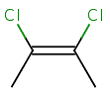 s = CIS (which equals with the Z stereoisomer) |
|
CIPStereoChemistry |
Parity |